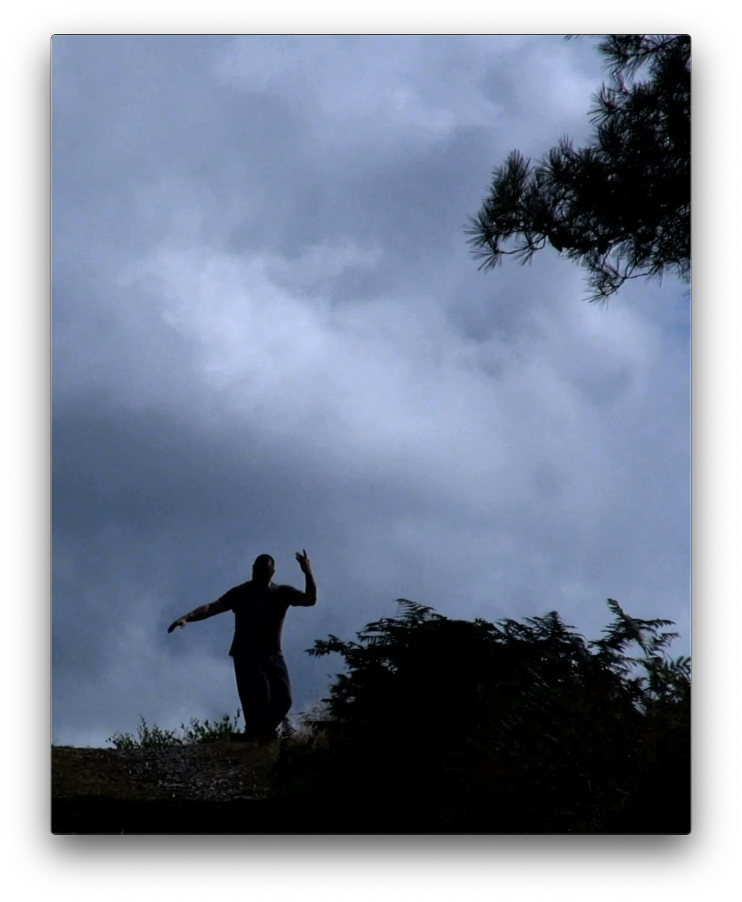
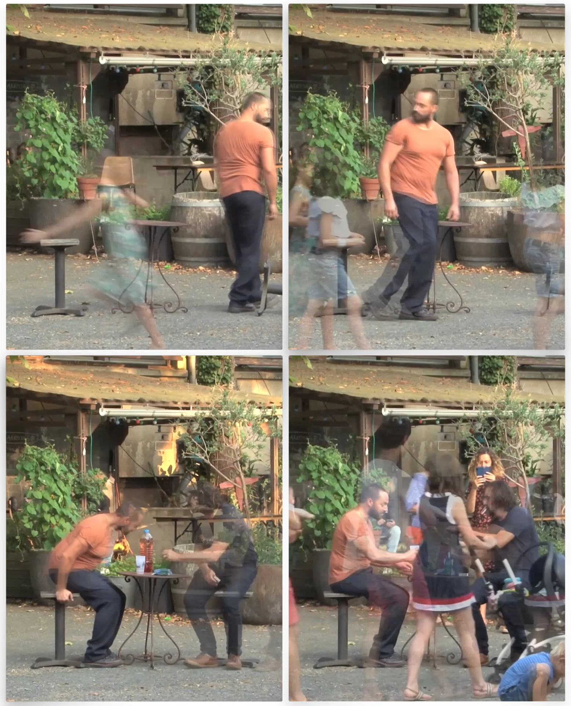
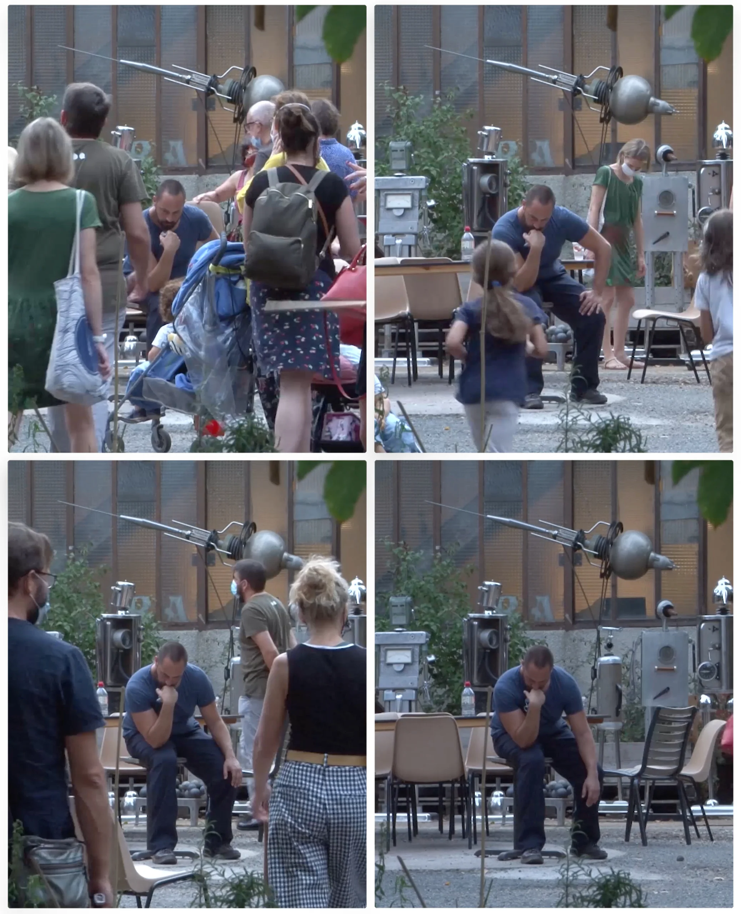

Une éloge de la lenteur
« La Machine à prendre le Temps » est une série de courts métrages poético-burlesques mettant en scène un ou des personnages dans divers lieux et situations où le temps s’affole autour d'eux. Le procédé utilisé consiste à accélérer au montage des mouvements et actions réalisés au ralenti, créant ainsi une accélération de l’environnement dans lequel évolue le(s) protagoniste(s). Est ainsi mise en évidence, voire révélée, la vitesse parfois folle de ce qui nous entoure et que l'on ne parvient pas forcément à observer à vitesse réelle.

Rendre visibles nos temporalités
Selon la nature de l'environnement à mettre en valeur (La foule, le vent, le soleil, la mer...) les
mouvements sont effectués plus ou moins lentement, parfois dans l'extrême lenteur pour les éléments
mobiles "les moins rapides", comme par exemple le parcours du soleil.
L'accélération appliquée au montage vidéo varie de 6 à 400 fois la vitesse réelle du tournage et cette
accélération est inversement proportionnelle à la lenteur des mouvements effectués. Ainsi pour obtenir
une vidéo de 10 secondes le temps de tournage peut aller de 1 minute filmée (accélération x6) à 1 heure
(accélération x 400), selon la référence à rendre perceptible.
D’une référence de temps à une autre, différents jeux se mettent en place. Par exemple ralentir 5
minutes pour laisser le temps à une glace de fondre totalement au soleil. Ralentir 40 minutes pour
donner le temps à une ombre de parcourir un mètre sur le sol ou bien de révéler la course de nuages
immobiles en apparence. Ralentir 20 minutes dans une gare, le temps que plusieurs trains arrivent et
repartent avec leurs voyageurs qui vont et viennent, etc…

Remplir le mouvement
Le processus de création s’ancre totalement dans l’instantanéité des évènements. Les scénarios sont
rarement construits à l’avance et la part d’improvisation est importante. La lenteur permet en effet une
anticipation en temps réel de ce qui va suivre et donc une inventivité au présent.
L’interprétation repose avant tout sur la présence à soi, aux autres, et à l’environnement dans
l’exécution des mouvements. Le cadre choisi et la variable qui sera accélérée sont les principales
contraintes de départ, pour le reste il s’agit d’être présent à ce qui se déroule sans trop de décision
préalable.

Une invitation à ralentir
Ce projet touche quelque chose d’universel et trouve son sens, au delà des vidéos, dans les performances
elles même qui sont réalisées essentiellement dans l’espace public. Il accorde au temps une dimension
qualitative où chaque geste, déplacement, ou intention semblent pouvoir se ralentir à l’infini pour en
goûter les plus infimes saveurs et détails.
Considérant que la vitesse nulle et l’immobilité n’existent pas, jusqu’à quel extrême pourrions nous
alors ralentir ? Pouvons-nous par exemple goûter à la temporalité d’un arbre centenaire, vivre un temps
à son allure ?
La lenteur a mauvaise réputation dans le monde que nous côtoyons. On pourrait se lasser, on pourrait
perdre notre temps, ne pas être performant. Pourtant ralentir n’est pas moins agir, c’est peut-être même
tout l’inverse. Dans la lenteur la vitesse existe encore. Les accents, les chutes, les suspensions, les
accélérations, les ralentissements perdurent… Tout n’est question que de référence. À quelle pulsation
décide-t-on de voir défiler les choses ? Nous pourrions tous prendre le temps toujours infiniment plus.

Sébastien Dumont
Chorégraphe vidéaste, auteur et interprète de ces vidéos, il est à la fois un artiste du corps et de
l'image, spécialisé dans le mouvement.
Ce projet artistique est né en 2019, dans cette continuité et mélange des pratiques artistiques, et dans
un élan poétique que les bouleversements actuels de notre société tendent à renforcer.